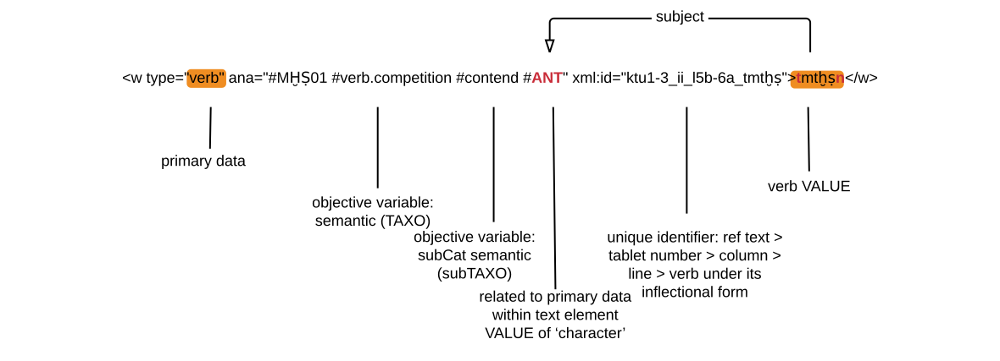

Within transcription
Note: (1) Value in capital letters: implies to select the right choice of the subcategory,
ie ACTION VERB ➞ confrontation. (2) Only highlighted relevant elements and attributes
for hermeneutics of action.
- XPath:
- from data mining: ➞
div1[1]|div2[n]/div3[n]/div4[n]
<element>@type: VALUEdescription div1 transcription ‘within transcription’ elements from the analyzed text div2 tablet tablet's number [n] div3 col column's number [n] div4 part subsection of the text [n]
- from data mining: ➞
div1[1]|div2[n]/div3[n]/div4[n]
- XML-TEI elements: lg|l|w
- XML-TEI attributes:
@ana|@type|@xml:id - Values:
- Traditionaly proposed in XML-TEI: noun|verb
- from preliminary step before primary data: ENTITY'S NAME
- from primary data: entity|VERB
- from objective variables: VERB|ACTION VERB
Following transcription within the elements TEI ➞ text ➞ group ➞ body ➞ div[…] ➞ div4[n]
➞ <lg> , a practical example from KTU 1.3 (colonne 2, line
5b-6a):
<l n="5b-6a" xml:id="ktu1-3_ii_l5b-6a" ana="#ktu1-3_ii_l5b_6a_int" corresp="#ktu1-3_ii_l5b-6a_int"> <w>w</w><space/> <w>hln</w> <g>.</g> <name type="character" ana="#Character #ANT #v-ANT-ktu1-3_ii_l5b-6a">ʿnt</name> <g>.</g> <w type="verb" ana="#MḪṢ01 #verb.competition #contend #ANT" xml:id="ktu1-3_ii_l5b-6a_tmtḫṣ">tm<lb break="no"/>tḫṣ</w> <g>.</g> <w>b</w><space/> <w type="noun" ana="#ʿMQ">ʿmq</w> <g>.</g> </l>
Only elements from primary data and objective variables are used at this stage:
- Annotated translation.
- Parsing XML-TEI with R.
<l>➞@xml:id:"ktuREF" is essential to link the right ‘objective variables’ to ‘subjective variables’ for R statistics — in the repivous example, xml:id="ktu1-3_ii_l5b-6a.<w>:
Another pratical example with a schema, which meaning is “warriors are performing an action of destruction (tmtḫṣn)”:
Specific case, verb repetition. For parsing XML-TEI in R, with and without emphasis.
Note:
- XML-TEI elements for the emphasis:
<span> - XML-TEI attribute:
@type - Value: emphasize
<l n="23" ana="#ktu1-3_ii_l23" xml:id="ktu1-3_ii_23"> <lb/><w type="adv">mʾid</w> <g>.</g> <w type="verb" ana="#MḪṢ01 #verb.competition #contend #WAR" xml:id="ktu1-3_ii_23_tmtḫṣn">tmtḫṣn</w> <g>.</g> <w>w</w><space/> <w type="verb" ana="#ʿN01 #verb.perception #observation #ANT" xml:id="ktu1-3_ii_23_tʿn">tʿn</w> </l> <l n="24" ana="#ktu1-3_ii_l23" xml:id="ktu1-3_ii_24"><span type="emphasize" ana="#ktu1-3_ii_23"/> <lb/><w type="verb" ana="#ḪSB01 #verb.competition #contend #WAR" xml:id="ktu1-3_ii_24_tḫtṣb"> <span type="emphasize" ana="#ktu1-3_ii_23_tmtḫṣn">tḫtṣb</span></w> <g>.</g> <w>w</w><space/> <w type="verb" ana="#ḤDY01 #verb.perception #observation #ANT" xml:id="ktu1-3_ii_24_tḥdy"> <span type="emphasize" ana="#ktu1-3_ii_23_tʿn">tḥdy</span></w> <g>.</g> <name type="character" ana="#Character #ANT">ʿnt</name> </l>
- In the previous example
<span>@type="emphasize":- After
<l>which includes all words within the line:-
@xml:id="ktu1-3_ii_24" ➞@ana="#ktu1-3_ii_23" for the emphasis of@n="23"
-
- After
<w>for the verb(s) only:@xml:id="ktu1-3_ii_24_tḫtṣb" ➞@ana="#ktu1-3_ii_23_tmtḫṣn" for the emphasis of “tmtḫṣn”@xml:id="ktu1-3_ii_24_tḥdy" ➞@ana="#ktu1-3_ii_23_tʿn" for the emphasis of “tʿn”
- After